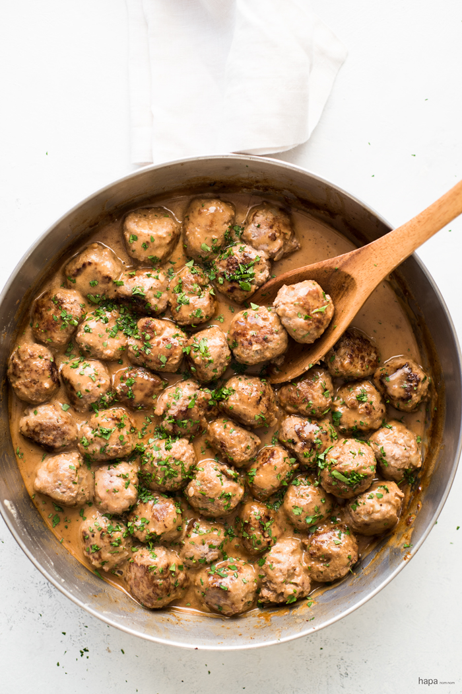

Swedish meatballs

These heavenly Swedish Meatballs are a homemade version of the iconic Ikea meatballs. They’re a whole lot easier than assembling flat-pack furniture, that’s for sure! Extra-soft and juicy, with a dash of classic spices like allspice, they’re smothered with the bread-mop-worthy sauce.
Ingredients
- These heavenly Swedish Meatballs are a homemade version of the iconic Ikea meatballs. They’re a whole lot easier than assembling flat-pack furniture, that’s for sure! Extra-soft and juicy, with a dash of classic spices like allspice, they’re smothered with the bread-mop-worthy sauce.
- Bread – the secret to extra soft meatballs! Far more effective than breadcrumbs;
- Nutmeg and All Spice – the signature spicing, just a small, subtle amount. All Spice is a particular type of spice made from a plant called Pimenta dioica. It smells like cloves. It’s a common spice found in normal supermarkets, and costs no more than usual spices. Best substitute is Mixed Spice
- Beef stock/broth and cream – for the creamy gravy
- Flour – to thicken the gravy
- Egg – for binding the meatballs together
How to Make Lasagna Step-By-Step
- Use an ice cream scooper with a lever to scoop up the mixture. Standard size is 3 tablespoons – I use slightly less than the scoop (3 tablespoons is quite large);
- Scoop and dollop all the mixture;
- THEN roll them all;
- Voila! Even size meatballs, rolled relatively quickly!